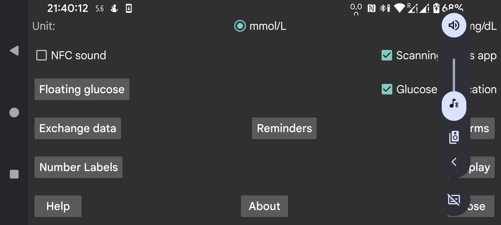

ar be de es fr hi it ja nl pl pt ru tr uk uz zh en
Select whether glucose values should be given in mmol/L or mg/dL.
Make sound during scanning in addition to vibration.
If checked this app will be started when you scan a sensor via NFC even if this app is not displayed. If multiple apps have this setting, android will display a chooser from which to select which app you want to use. Somehow choosing one doesn't work and selecting one to be chosen the next time neither. So in this case you can't scan without an app in the foreground. Turning it off in this app, will make it possible that at least one app can be activated this way.
If you have root access, you can also disable NFC activation of Abbott's Librelink app (doesn't work with Libre3):
Become root in adb shell or termux, and type:
pm disable com.freestylelibre.app.nl/com.librelink.app.ui.common.NFCScanActivity
On Librelink 2.7.1 and lower you had to press:
pm disable com.freestylelibre.app.nl/com.librelink.app.ui.common.ScanSensorActivity
com.freestylelibre.app.nl is here the Dutch version of Librelink, this should be replaced with the version you are using. You can find its name by typing (even without root):
pm list package freestylelibre
Afterwards, you can still use Librelink for scanning when it is in the foreground, but it will not be started otherwise. Librelink 2.5.2 and higher crash themselves if they detect root. But in Magisk you can easily hide root by renaming Magisk and adding individual apps to the denylist (Magisk 24.3) or Magiskhide (Magisk 23.0). You should also add Juggluco to the denylist. Except when you use US Freestyle Libre 2 sensors, you can also use an older version of Librelink without root check.
Without root, under adb shell, you can also disable the whole app:
pm disable-user --user 0 com.freestylelibre.app.nl
Before calling Abbott customer service, you can re-enable it with:
pm enable com.freestylelibre.app.nl
(Previously called "Glucose in android status bar"). If set, glucose values streaming via Bluetooth are quietly displayed in a notification and the android status bar. If you turn it off, instead of a number, a dot is shown and the notification tells nothing more than "To connect to sensor" or "To exchange data". An app that stays running in the background, is obliged by Android to have such visible notification (otherwise it is easily stopped by Android). Juggluco only turns off the notification, when "Sensor via Bluetooth" is turned off and there are no mirror connections.
On some smartphones, the glucose value is only shown in the Android status bar after changing Androids notification settings. On Realme GT 5G for example, you have to go to applist->Juggluco->manage notifications, tab on glucoseNotification and turn off "Set to Silent". "Display in status bar" will now be shown turned on.
You can also get an android notification by selecting Notify in the left middle menu. In that case the notification will be sent to some smartwatches, if it is configured that way. That works with Garmin watches, I don't know if it works with anything else. Alarms also generate notifications.
When you turn this on, a small image with the current glucose value is constantly present on the screen independent of which app is in the foreground. If you turn it on the first time, you will be directed to a list of apps in which you have to give Juggluco permission to display over other apps.
Set high en low glucose alarms, loss of signal alarm and value available notification.
Specify the labels used for amounts. Go to a screen to determine which labels to use to set amounts, like insulin doses, carbohydrate consumption and hours spend playing football. If you also use the Garmin watch app Kerfstok, these labels are sent to the watch app.
Different ways to send data from Juggluco to other apps or servers. (For sending data to watches go to left menu->Watch.)
Specify that an alarm should go of if you didn't enter a certain amount of food or medication within a certain time period.
Scan the data matrix on Sibionics sensor packages and on Dexcom G7/ONE+ applicators and the QR code of left middle menu→Mirror with the Google code scanner. If unchecked, zXing is used. On most devices, Google scan works better, but sometimes it doesn’t work. When it fails with an error, zXing is always used, but sometimes Google scan just doesn’t work without returning an error.
All kind of settings having to do how data is displayed, from target range to language.